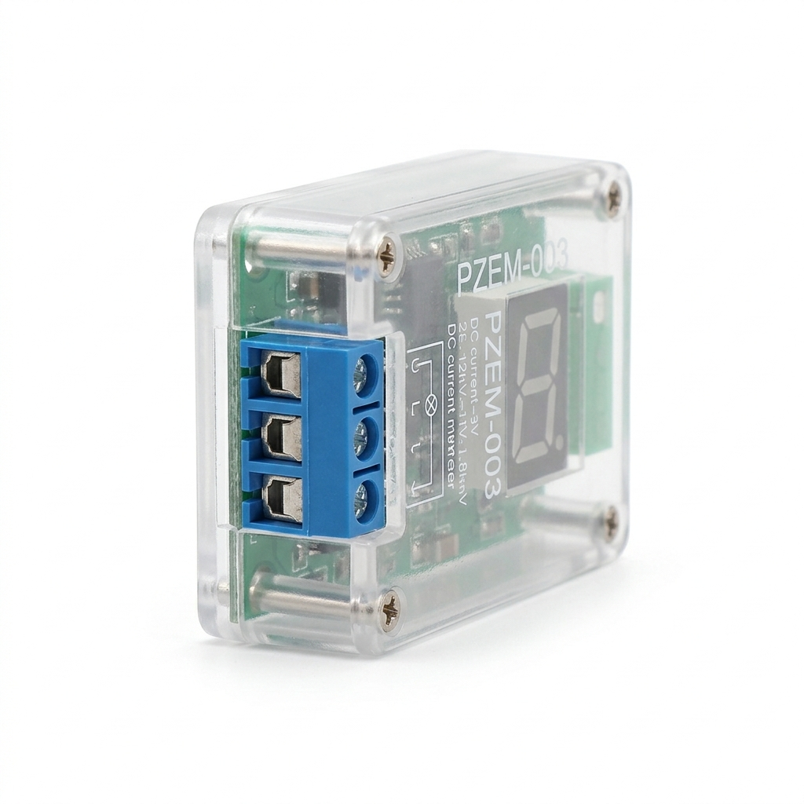
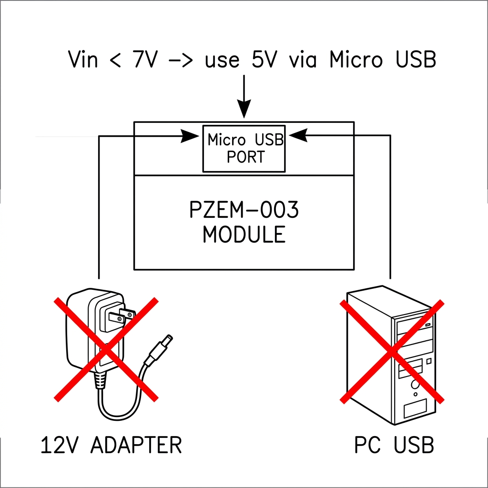
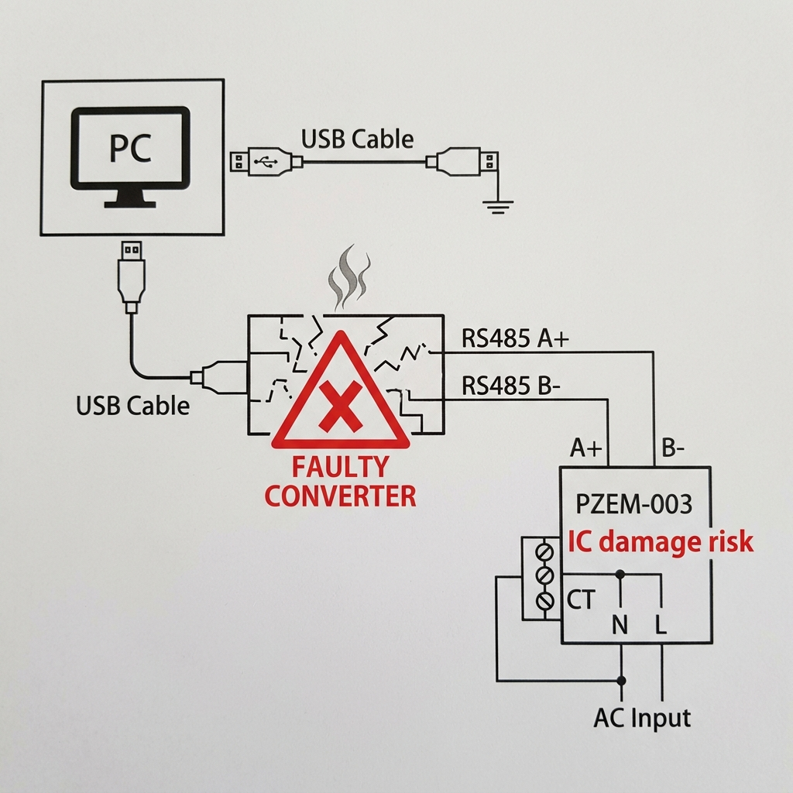
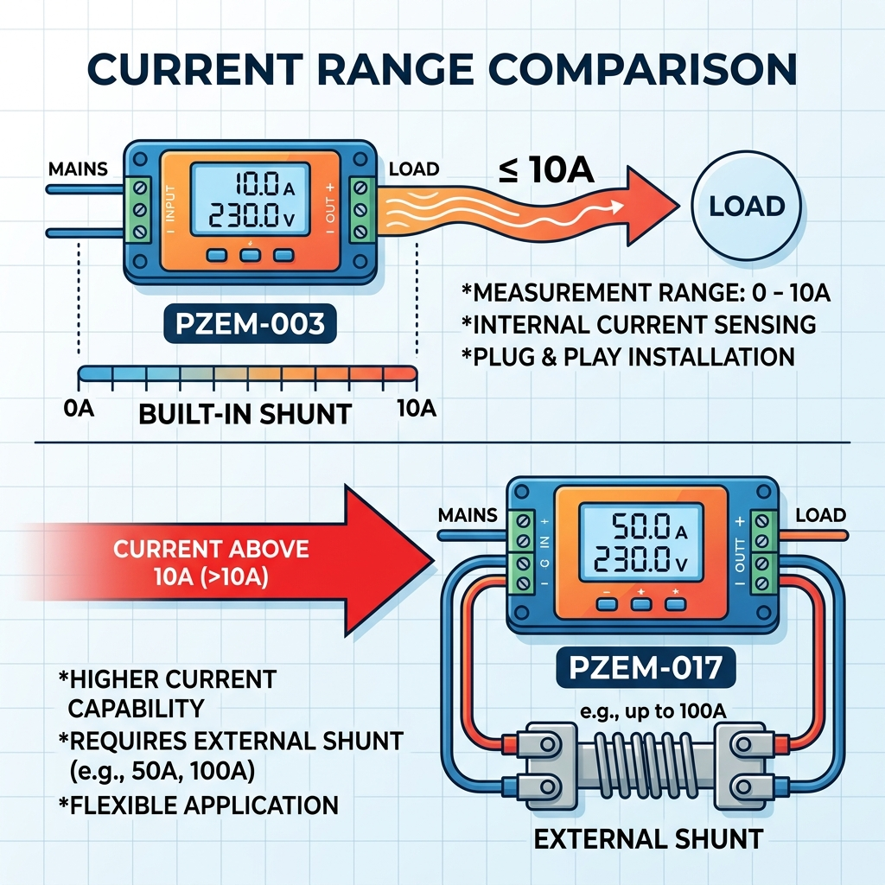
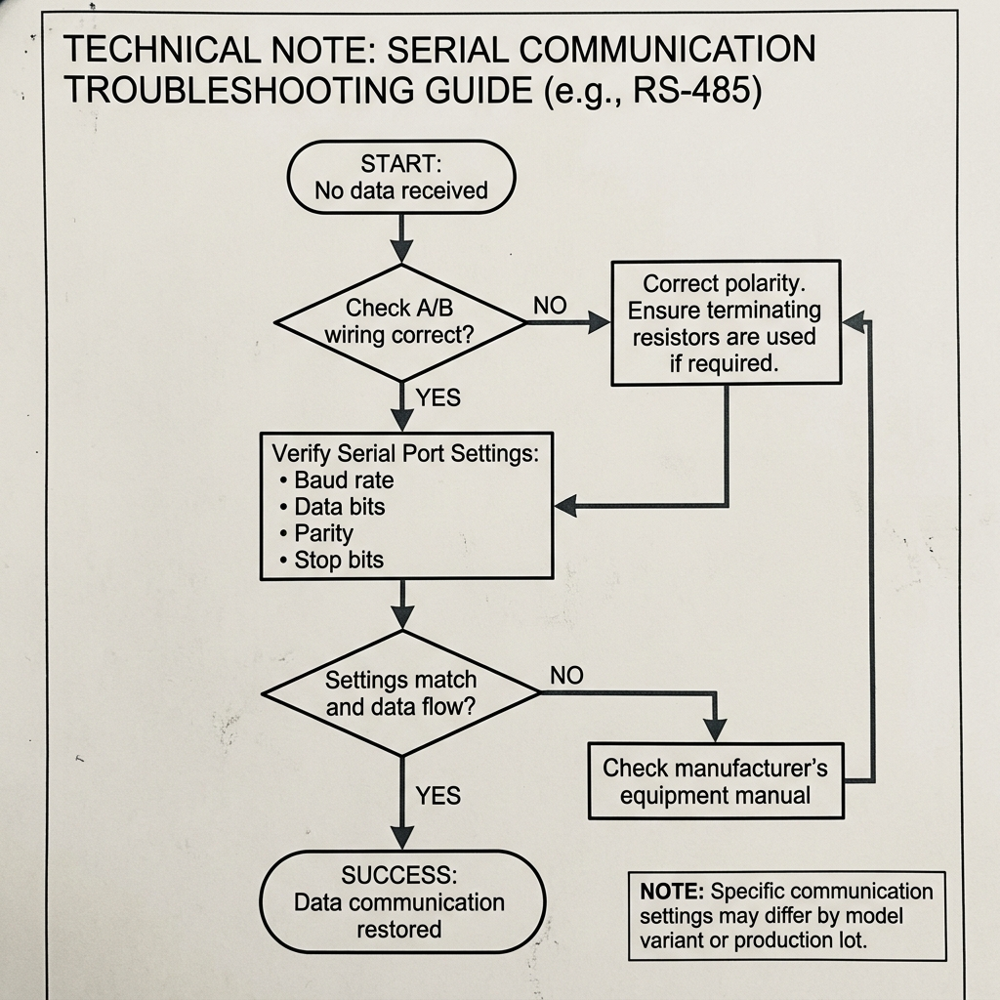
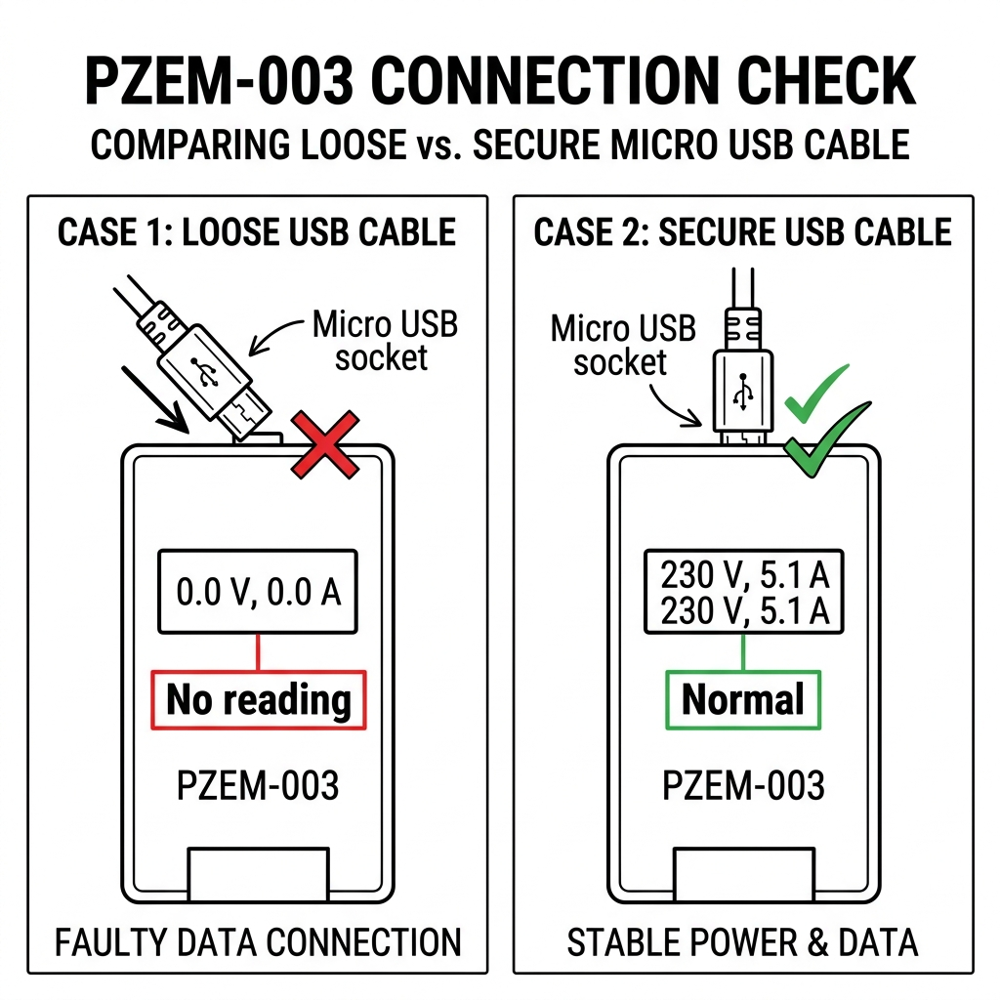

DC Power Meter Communication Module (RS485 / Modbus RTU)

PZEM-003กรณีแรงดันที่วัดต่ำกว่า 7V ต้องจ่ายไฟเลี้ยง 5V แยกผ่านพอร์ต Micro USB
สิ่งที่มาจากคู่มือ: ไม่ควรใช้แรงดันสูงกว่ากำหนด และไม่ควรใช้ USB จากคอมพิวเตอร์โดยตรง
ต้องตรวจสอบอุปกรณ์แปลงสัญญาณ RS485-to-USB ให้อยู่ในสภาพปกติก่อนใช้งาน
“จากการทดลองพบว่า...”ตัวแปลงที่ชำรุดอาจดึงไฟหรือจ่ายไฟผิดปกติ จนทำให้ไอซีภายใน PZEM เสียหายได้

ต้องตรวจสอบพิกัดการใช้งานไม่ให้เกิน 10A
PZEM-003 มี Built-in Shunt รองรับได้สูงสุด 10A หากเกินควรใช้รุ่น PZEM-017
หากอ่านค่าไม่ได้ ควรตรวจสอบการต่อสาย A/B และการตั้งค่า Serial ตามคู่มือ
Baud rate, Parity, Stop bits อาจต่างกันตามลอตการผลิต
ควรตรวจสอบความแน่นของสาย Micro USB ที่ใช้เป็นไฟเลี้ยงสำรอง
“จากการทดลองพบว่า...”หากสายหลวมหรือไฟไม่เสถียร อาจทำให้โมดูลไม่ทำงานหรืออ่านค่าไม่ออก
